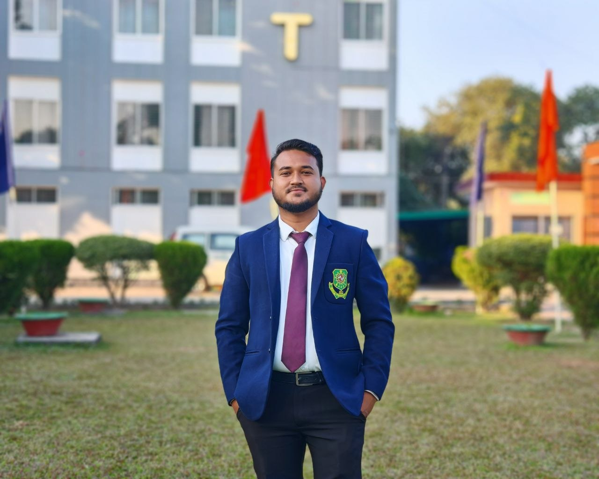
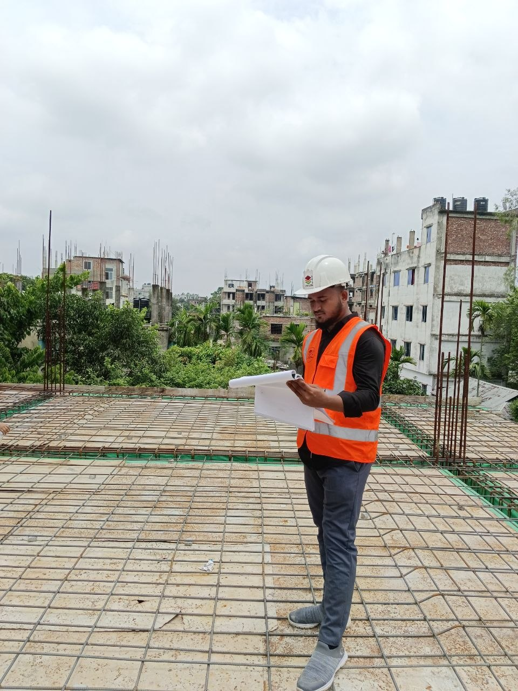
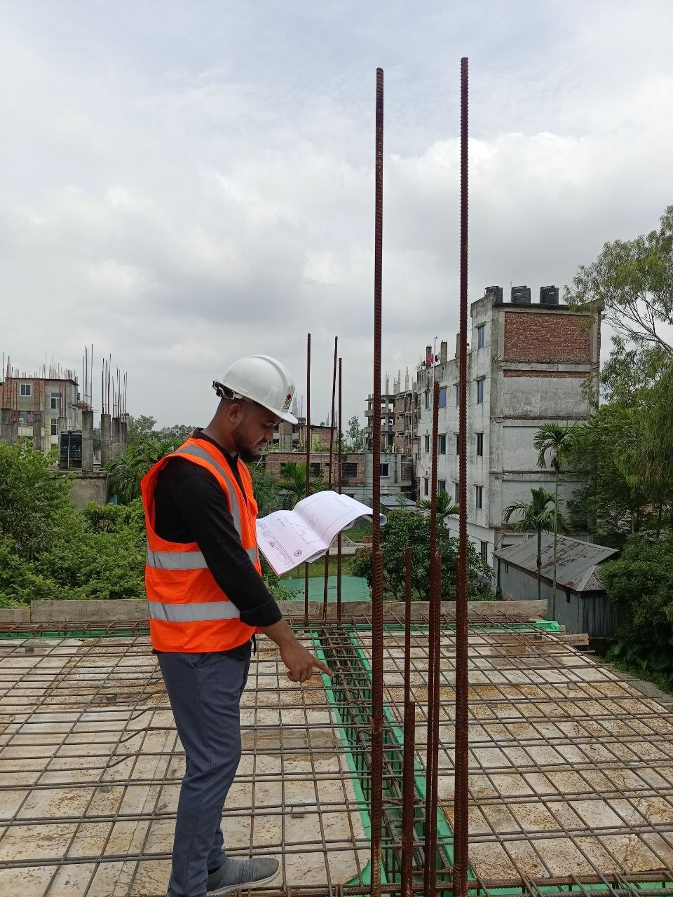
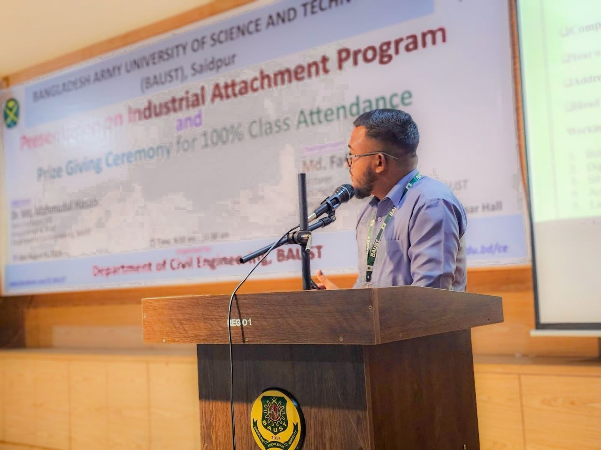
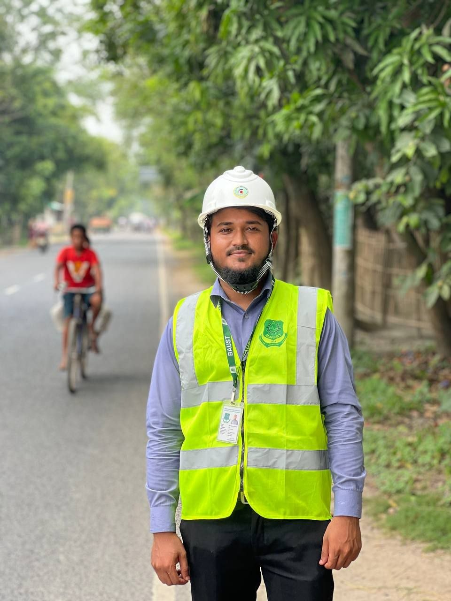
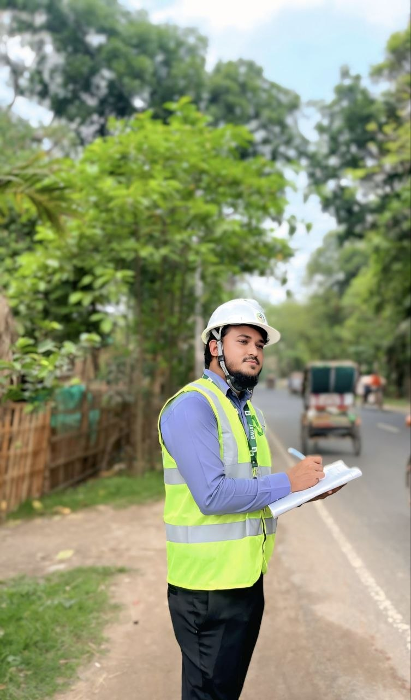
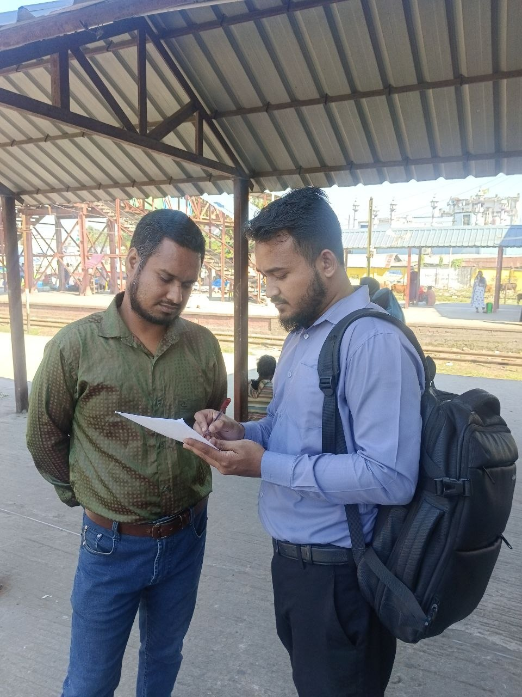
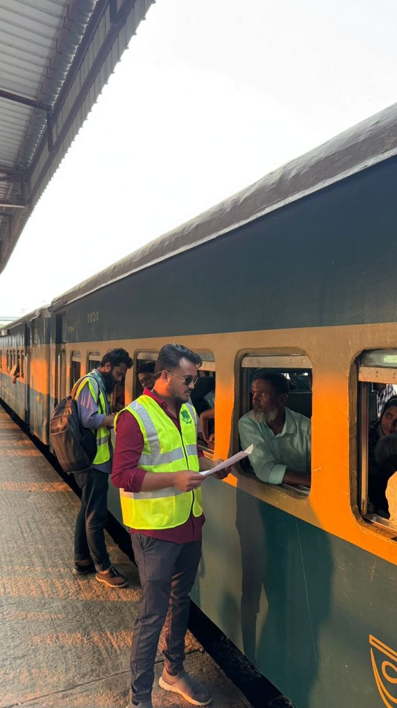

B.Sc. Engineering in Civil Engineering
Bangladesh Army University of Science and Technology (BAUST), Saidpur
Open to Civil Engineering Opportunities
I apply structural design, site supervision, quality control, and project estimation to real construction work—from blueprint to build.
Civil Engineering graduate from Bangladesh Army University of Science and Technology (BAUST), Saidpur, with hands-on exposure to structural design, project estimation, surveying and site supervision. Comfortable moving between analysis software and the construction site—from running load cases in ETABS to interpreting drawings on site.

Saidpur, BangladeshBangladesh Army University of Science and Technology (BAUST), Saidpur
Lions School and College, Saidpur
Al Faruque Academy, Saidpur







Open to civil engineering roles, project collaboration, structural design, site engineering, and construction supervision.